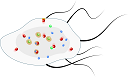

|  |
SINGulatorBy SING |
Recent computational methodologies, such as agent-based modelling, support the search for explanatory insight into the collective behaviour of molecules and bring forward the discussion of intrinsic noise while simulating biological events. The present work contributes to this line of research by assembling and validating a molecular-scale agent-based model for the simulation of enzymatic reactions at experimentally measured concentrations. The model incorporates stochasticity and spatial dependence, using diffusing and reacting particles with physical dimensions. We started by adjusting the information from classical theories, namely enzymatic rates and diffusion coefficients, to the information required by the computational agents, i.e. collision efficiency, interaction logic between agents, the time scale associated with interactions (e.g. kinetics), and agent velocity. We developed specific strategies to implement the model in a way that could use and reproduce experimental measures of diffusion and kinetics, in the form of Michaelis-Menten parameters. The velocity of the agents was defined in an iterative manner to match the corresponding theoretical diffusion coefficients.
Agents capable of diffusion and reaction take on physical dimensions based on the data reported by scientific literature and the BRENDA database. Enzymes and metabolites are represented by agents with spherical approximations (by the hydrodynamic or van der Walls radius) of the excluded volume of the biomolecules. The diffusion coefficients were calculated using the Stokes-Einstein equation for diffusion of spherical particles in a liquid.
Enzymatic reactions are defined by the computational parameters simkcat, simKm and reaction radius. The simkcat is the number of time steps between the formation of enzyme-substrate reaction complex and the product release. The simKm quantifies the probability of a successful collision between an interacting enzyme and substrate. And, the reaction radius enables the enzyme agent to detect substrate agents off the immediate vicinity and test more possible interactions.
For more information about the SINGulator check the user manual.